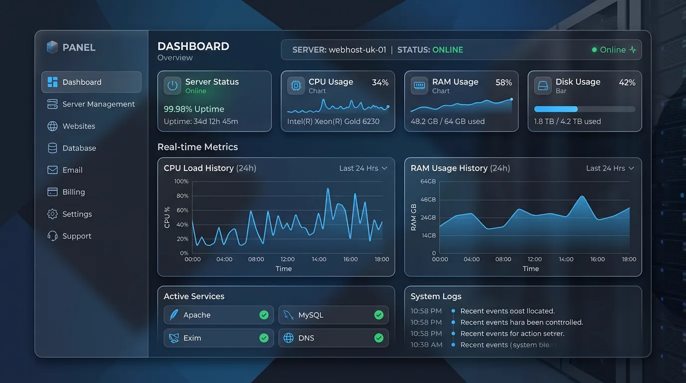
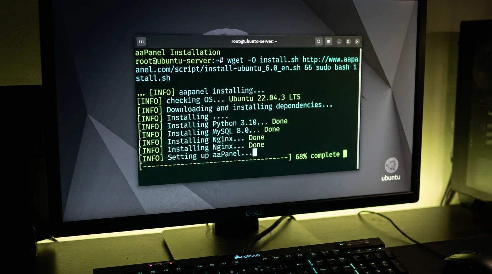
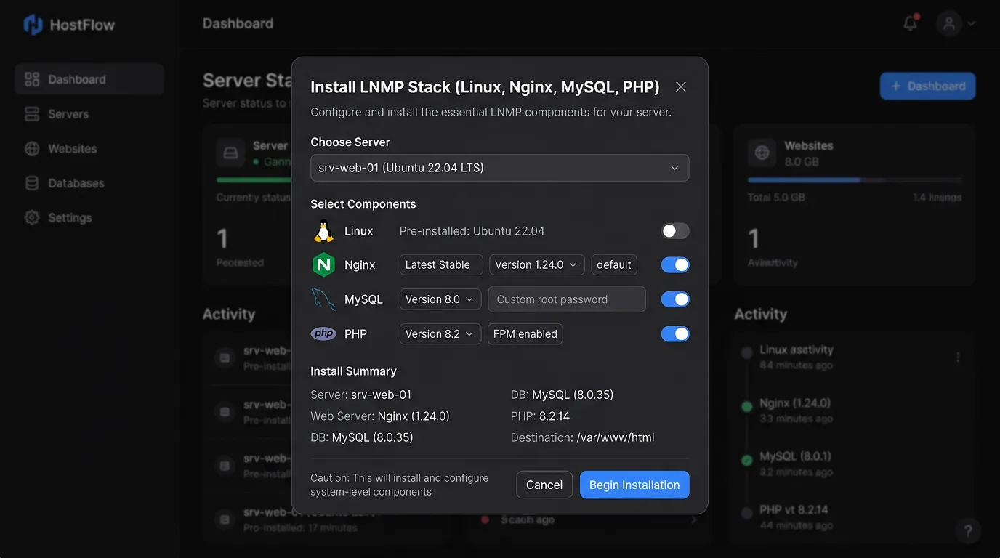
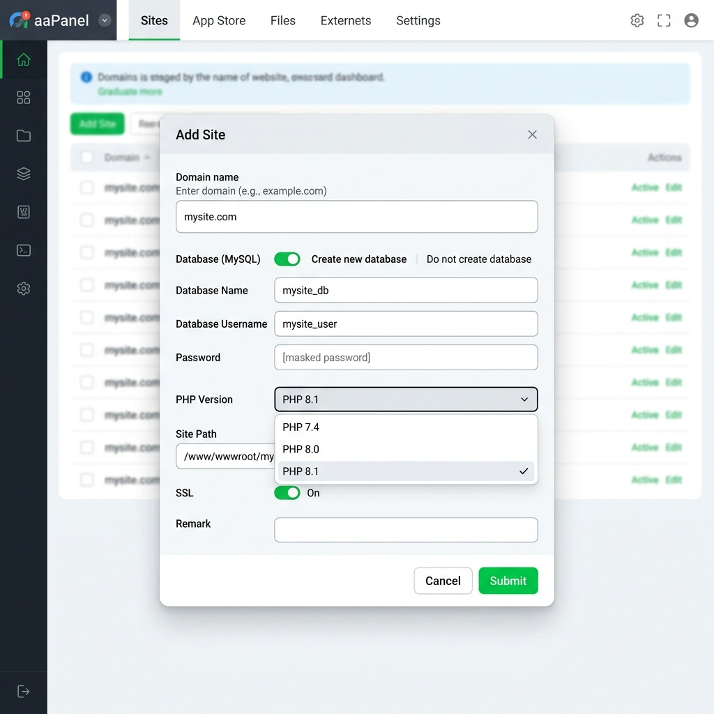
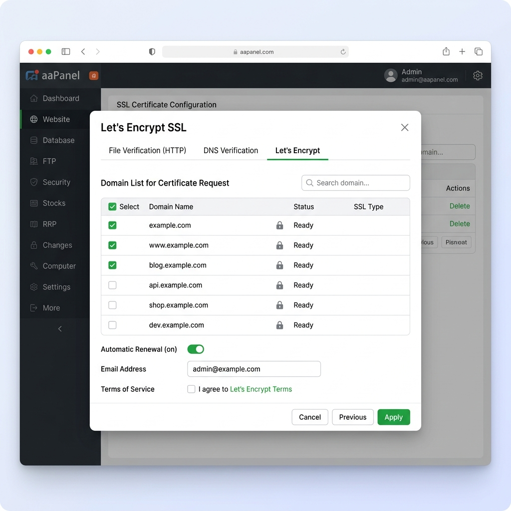

Bạn đang tìm kiếm một giải pháp quản trị VPS (Virtual Private Server) toàn diện, miễn phí và dễ sử dụng? Trong thế giới máy chủ Linux, nếu bạn cảm thấy giao diện dòng lệnh (Command Line) quá khô khan, khó nhớ và dễ gây lỗi, thì aaPanel chính là "vị cứu tinh" hoàn hảo.
Trong bài viết này, đội ngũ kỹ thuật của TeamDevDesign sẽ hướng dẫn bạn chi tiết từ A–Z cách cài đặt aaPanel trên VPS Linux (áp dụng cho Ubuntu, Debian, CentOS, AlmaLinux). Không chỉ dừng lại ở việc cài đặt, chúng tôi còn hướng dẫn bạn cách tối ưu môi trường Web Server, tạo website WordPress, và thiết lập SSL Let's Encrypt miễn phí chuẩn SEO 2026. Bất kể bạn là người mới bắt đầu hay dân kỹ thuật chuyên nghiệp, bài viết cực kỳ chi tiết này sẽ giúp bạn làm chủ hệ thống của mình một cách hoàn hảo nhất.
aaPanel là phiên bản quốc tế của BT Panel (BaoTa Panel) – một trong những Control Panel quản lý máy chủ Linux phổ biến nhất toàn cầu. aaPanel cung cấp một giao diện đồ họa (GUI) quản trị trực quan trên nền web, giúp bạn thao tác mọi thứ với máy chủ chỉ bằng những cú click chuột thay vì gõ hàng tá dòng lệnh phức tạp.

Dù aaPanel được mệnh danh là siêu nhẹ, nhưng hiệu năng của hệ thống phụ thuộc rất lớn vào phần cứng VPS và số lượng website bạn định chạy. Dưới đây là khuyến nghị cấu hình từ TeamDevDesign dựa trên thực tế triển khai năm 2026:
| Cấu hình RAM | Ứng dụng phù hợp | Lưu ý quan trọng |
|---|---|---|
| VPS 1GB RAM | Học tập, vọc vạch, 1-2 blog cá nhân traffic cực nhỏ. | Chỉ nên chạy Nginx + PHP + MySQL 5.7. Tuyệt đối không cài MySQL 8.0 vì sẽ gây tràn RAM (OOM - Out of Memory). |
| VPS 2GB RAM | Web doanh nghiệp, Blog chuyên nghiệp, website bán hàng cơ bản. | Đây là cấu hình tiêu chuẩn tối thiểu khuyên dùng. Chạy mượt mà WordPress với lưu lượng 1.000 - 3.000 traffic/ngày. |
| VPS 4GB RAM trở lên | WooCommerce, trang tin tức lớn, Landing Page chạy quảng cáo. | Thoải mái cài đặt MySQL 8.0, cấu hình Redis Cache, Elasticsearch và chạy đồng thời hàng chục website. |
Để đảm bảo quá trình cài đặt aaPanel không báo lỗi, máy chủ của bạn cần đáp ứng điều kiện tiên quyết: BẮT BUỘC PHẢI LÀ CLEAN OS (Hệ điều hành mới hoàn toàn, chưa từng cài đặt Apache, Nginx, PHP hay MySQL trước đó).
Các hệ điều hành Linux được aaPanel hỗ trợ chính thức và ổn định nhất bao gồm:
Trên máy tính của bạn, hãy sử dụng phần mềm Terminal (macOS/Linux) hoặc PuTTY, MobaXterm, Bitvise SSH (Windows) để kết nối tới VPS bằng quyền root.
ssh root@IP_VPS_CUA_BAN
Hệ thống sẽ yêu cầu bạn nhập mật khẩu (Lưu ý: trên Linux khi gõ mật khẩu sẽ không hiện ký tự để bảo mật, bạn cứ gõ đúng và nhấn Enter).
Trước khi cài đặt bất cứ thứ gì, việc cập nhật hệ điều hành lên phiên bản mới nhất là điều bắt buộc. Điều này giúp vá các lỗ hổng bảo mật và cập nhật các thư viện nền tảng.
Đối với Ubuntu / Debian:
sudo apt update && sudo apt upgrade -y
Đối với CentOS / AlmaLinux / Rocky Linux:
sudo yum update -y
Copy và dán lệnh tương ứng với Hệ điều hành của bạn vào cửa sổ SSH, sau đó nhấn Enter.
Script dành cho Ubuntu/Deepin/Debian:
URL=https://www.aapanel.com/script/install_6.0_en.sh && if [ -f /usr/bin/curl ];then curl -ksSO "$URL" ;else wget --no-check-certificate -O install_6.0_en.sh "$URL";fi;bash install_6.0_en.sh aapanel
Script dành cho CentOS/AlmaLinux/Rocky Linux:
yum install -y wget && wget -O install.sh http://www.aapanel.com/script/install_6.0_en.sh && bash install.sh aapanel

Trong quá trình chạy, hệ thống sẽ hỏi bạn Do you want to install aaPanel to the /www directory now?(y/n):. Hãy gõ chữ y và nhấn Enter.
Quá trình cài đặt tải về các mã nguồn lõi sẽ diễn ra tự động trong khoảng 3 đến 10 phút.
Khi tiến trình kết thúc (đạt 100%), bạn sẽ thấy một thông báo màu sắc nổi bật hiển thị trên màn hình. Đây là thông tin tối quan trọng, hãy copy và lưu vào file Note ngay lập tức:
http://IP_VPS:8888/chuoi-bao-mat (Đường dẫn truy cập aaPanel)Truy cập vào aaPanel Internet Address trên trình duyệt, đăng nhập bằng Username và Password. Ngay lập tức, aaPanel sẽ chào đón bạn bằng một hộp thoại yêu cầu cài đặt môi trường Web Server.
Bạn sẽ thấy hai lựa chọn chính là LNMP (Nginx) và LAMP (Apache). TeamDevDesign khuyên bạn chọn LNMP với cấu hình như sau để đạt tối ưu hóa tốt nhất:

Nhấn One-click và chờ đợi các phần mềm cài đặt hoàn tất. Trong lúc này, bạn không nên đóng trình duyệt.
Vào trang quản lý tên miền (như Cloudflare, Tenten, Mắt Bão), tạo một bản ghi (Record) loại A, với Host là @ (hoặc www) và Giá trị (Value) là Địa chỉ IP của VPS của bạn. Bỏ dấu đám mây cam nếu dùng Cloudflare để cài SSL dễ dàng hơn.
domain.com).Not set thành MySQL. Hệ thống sẽ tự tạo Database Name và Password cho bạn. (Hãy lưu lại thông tin này).
Vào menu Files của aaPanel, truy cập vào thư mục chứa website (thường là /www/wwwroot/domain.com). Xóa file index.html mặc định.
Nhấn nút Remote Download (Tải từ xa), nhập URL tải mã nguồn WordPress tiếng Việt mới nhất: https://vi.wordpress.org/latest-vi.zip.
Tải xong, click chuột phải vào file .zip, chọn Unzip. Chuyển toàn bộ file bên trong thư mục wordpress vừa giải nén ra thư mục gốc /www/wwwroot/domain.com.
Mở trình duyệt, truy cập vào tên miền của bạn và làm theo các bước thiết lập WordPress quen thuộc (điền User/Pass database đã lưu ở Bước 2).
Google bắt buộc các website phải có HTTPS. aaPanel làm việc này cực kỳ đơn giản:

Nguyên nhân: Port mặc định bị chặn bởi Tường lửa của hệ điều hành hoặc Tường lửa bên ngoài (Security Group) của nhà cung cấp VPS (AWS, Google Cloud, Oracle).
Khắc phục:
Nếu dùng VPS nội bộ, hãy mở port trên ufw (Ubuntu):
sudo ufw allow 8888/tcp && sudo ufw reload
Nếu dùng Cloud xịn (AWS, Azure), bạn phải lên trang web quản trị của hãng, mở Inbound Rules cho Port 8888.
Nguyên nhân: Cài MySQL 8.0 trên VPS chỉ có 1GB RAM, hoặc website bị tấn công DDoS làm cạn kiệt tài nguyên.
Khắc phục: Nâng cấp RAM (thuê gói VPS 2GB trở lên). Tạo Swap File (RAM ảo). Hoặc vào aaPanel App Store, tìm phần mềm Linux Tools, cấu hình Swap ở mức độ 2GB để chống tràn bộ nhớ.
Nguyên nhân: Tên miền chưa trỏ về IP VPS, hoặc Cloudflare đang bật Proxy (Đám mây màu cam) chặn quá trình xác thực.
Khắc phục: Đảm bảo tên miền đã trỏ đúng IP. Tắt đám mây cam trên Cloudflare thành mây xám, chạy lại lệnh Apply SSL, sau đó mới bật lại đám mây cam.
aaPanel cực kỳ bảo mật nếu bạn cấu hình đúng. Nó hỗ trợ Nginx WAF chống SQL Injection, Fail2ban chống dò mật khẩu SSH. Hơn nữa, nó cho phép bạn đổi cổng đăng nhập, thêm đường dẫn bảo mật (Security Entrance) và bật xác thực hai bước Google 2FA. Tuy nhiên, nó không chia cắt tài nguyên (CageFS) mạnh mẽ như CloudLinux + cPanel nên không phù hợp để bán Shared Hosting.
Không có giới hạn từ phần mềm. Giới hạn duy nhất là phần cứng VPS của bạn (RAM, CPU). Một VPS 2GB RAM chạy aaPanel + Nginx có thể gánh được 3-5 website WordPress tin tức, hoặc 1 website bán hàng traffic trung bình.
Truy cập vào VPS bằng SSH. Gõ lệnh bt và nhấn Enter. Nhấn số 14 để xem thông tin đăng nhập mặc định. Hoặc nhấn số 5 để tạo ngay mật khẩu mới vô cùng dễ dàng.
aaPanel thực sự là một cuộc cách mạng cho người dùng máy chủ Linux, biến những thao tác dòng lệnh khô khan trở thành những cú click chuột trực quan. Qua bài hướng dẫn này, hy vọng bạn đã tự tin triển khai thành công aaPanel trên VPS Ubuntu/CentOS, cũng như thiết lập website WordPress bảo mật với SSL Let's Encrypt.
Nếu bạn là chủ doanh nghiệp không có thời gian cấu hình hệ thống, hãy tham khảo dịch vụ Bảo trì & Quản trị Website chuyên nghiệp của TeamDevDesign. Chúng tôi cam kết tối ưu hóa tốc độ load web dưới 1 giây và bảo mật đa tầng, giúp bạn an tâm tuyệt đối phát triển kinh doanh.